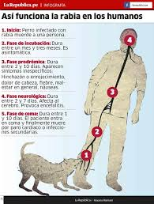

Fases de la rabia
Periode d'incubació
En general és de 2 a 8 setmanes i a vegades pot ser de només 5 dies o durar un any o més. Depèn de la magnitud de la ferida, el lloc de la laceració en relació amb la quantitat de nervis i la distància del cervell, la quantitat de virus introduïts, la protecció conferida per la roba i altres factors.
Fase prodròmica
Dura entre 2 i 10 dies. Apareixen símptomes inespecifics: Inflamació o envermelliment, dolor de cap, febre, mal estar general, nàusees.
Fase neurològica
Dura entre 2 i 7 dies. Afecta al cervell. Provoca encefalitis.
Fase de coma
Dura entre 1 i 10 dies, el pacient entra en coma i finalment mor d'un atac de cor o infeccions secundàries.
